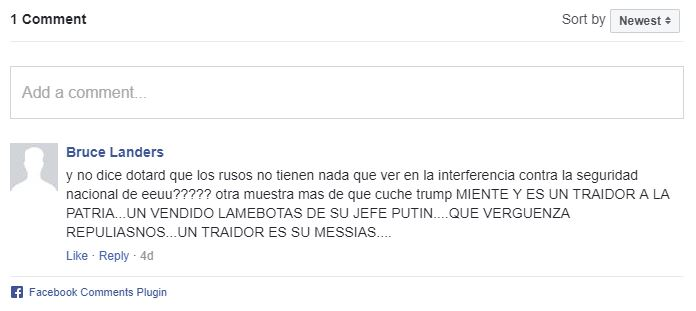

Microsoft desbarata nuevos intentos de hackeo ruso en EUA
La revelación se produjo apenas semanas después de que un hallazgo similar de la firma llevó a la senadora Claire McCaskill, una demócrata de Missouri que busca la reelección, a revelar que hackers rusos intentaron sin éxito infiltrarse en su red informática del Senado.
Por: AP
21 de Agosto de 2018 - 11:14 HS
Microsoft reveló el martes que descubrió nuevos intentos rusos de hackeo contra grupos políticos de Estados Unidos antes de las elecciones legislativas que se celebrarán en noviembre.
Según la empresa, un grupo de hackers vinculado con el gobierno ruso creó dominios de internet falsos que parecían parodiar a dos organizaciones conservadoras estadounidenses: el Instituto Hudson y el Instituto Republicano Internacional. Otros tres dominios falsos daban apariencia de pertenecer al Senado estadounidense.
Microsoft no ofreció más detalles sobre los sitios fraudulentos y las autoridades rusas rechazaron las denuncias, calificándolas de infundadas.
El portavoz del Kremlin, Dmitry Peskov, citó la falta de detalles sobre los hackeos y dijo que no estaba claro "quiénes son los hackers en cuestión" y cómo podrían afectar al sistema electoral estadounidense.
La revelación se produjo apenas semanas después de que un hallazgo similar de la firma llevó a la senadora Claire McCaskill, una demócrata de Missouri que busca la reelección, a revelar que hackers rusos intentaron sin éxito infiltrarse en su red informática del Senado.
Los intentos de infiltración recuerdan a ataques rusos similares perpetrados antes de los comicios generales de 2016, que según funcionarios de inteligencia estadounidenses trataron de ayudar al entonces candidato presidencial republicano Donald Trump en detrimento de su rival demócrata en la contienda por la Casa Blanca, Hillary Clinton.
Esta vez, más que beneficiar a un partido político, “está actividad se centra fundamentalmente en alterar la democracia”, afirmó Brad Smith, presidente y director jurídico de Microsoft, en una entrevista esta semana.
Smith apuntó que no hay indicios de que los hackers lograran engañar a alguien a visitar los sitios falsos, lo que había expuesto a las víctimas a una infiltración en su computadora, vigilancia oculta y robo de datos. Ambos centros de estudios dijeron que su trabajo en favor de la democracia en todo el mundo suele provocar la ira de los gobiernos autoritarios.
"Estamos contentos de que nuestro trabajo esté llamando la atención de los malos”, afirmó el vocero del Instituto Hudson, David Tell. "Esto significa que estamos teniendo efecto, presumiblemente”.
El Instituto Republicano Internacional está encabezado por una junta que incluye a seis senadores republicanos y a un destacado crítico de Rusia, Mitt Romney, que intentará lograr un escaño como senador por Utah este otoño.
Microsoft dice que se trata del grupo Strontium, aunque otros se refieren a él como Fancy Bear o APT28. Una acusación del fiscal especial de Estados Unidos Robert Mueller vincula al colectivo de hackers con la principal agencia de inteligencia de Rusia, conocida como GRU, y con la filtración de correos electrónicos al Comité Nacional Demócrata y a la campaña de Clinton en 2016.
Microsoft ha librado una batalla legal con Strontium desde que lo demandó en un tribunal federal de Virginia en el tercer trimestre de 2016. La empresa recibió una aprobación judicial el año pasado, lo que le permitió apropiarse de ciertos dominios falsos creados por el grupo.
Hasta ahora ha utilizado los tribunales para cerrar 84 sitios web falsos creados por Strontium, entre ellos los seis más recientes anunciados el martes.
Tags:
Lee también
Comentarios
